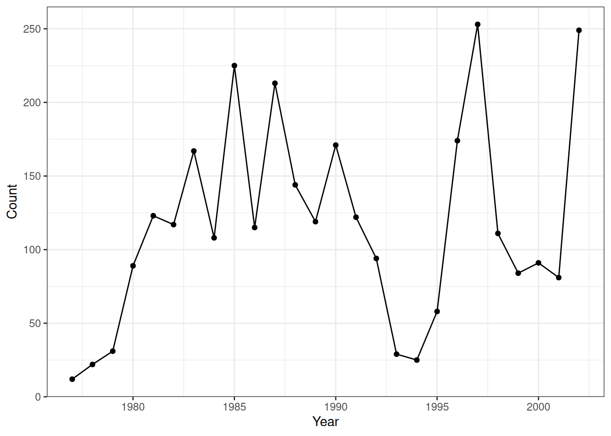

This week, we are going to take a break learning commands to talk about general approaches to programming.
Real computational tasks tend to be complicated. To accomplish them, you need to think before you code.
Set Up
For this lesson and the assignment, we will be using a number of datasets, including the 3 datasets with Portal data that we are already somewhat familiar with.
Let’s read in the tidyverse and download our datasets to get started.
# packageslibrary(tidyverse)
── Attaching core tidyverse packages ──────────────────────── tidyverse 2.0.0 ──
✔ dplyr 1.2.1 ✔ readr 2.2.0
✔ forcats 1.0.1 ✔ stringr 1.6.0
✔ ggplot2 4.0.2 ✔ tibble 3.3.1
✔ lubridate 1.9.5 ✔ tidyr 1.3.2
✔ purrr 1.2.1
── Conflicts ────────────────────────────────────────── tidyverse_conflicts() ──
✖ dplyr::filter() masks stats::filter()
✖ dplyr::lag() masks stats::lag()
ℹ Use the conflicted package (<http://conflicted.r-lib.org/>) to force all conflicts to become errors
One great way to work through the steps of coding is to break down the problem into smaller, more manageable chunks. This can also help you get an idea of the order in which to approach the coding.
Here are some good guidelines:
Understand the problem
Restate the problem in your own words
Determine the inputs and outputs
Ask for clarification
Break the problem down
Write down the pieces, on paper or as comments in a file
Break complicated pieces down until all pieces are small and manageable
Code one small piece at a time
Test it on it’s own
Fix any problems before proceeding
Let’s Practice!
Take a look at Question 4 in the assignment. Spend a few minutes reading through the question, restate the question in your on words, and then break down the steps.
Iteration
As you’ve probably discovered by now, programming requires a lot of iteration to get to code to do exactly what you want it to do and produce the output you are looking for.
When writing more and more complex code, it can help to start simple and build the code up.
Write a simple version -> Make sure it works -> Make sure you understand it -> Modify it to make it more complicated -> Repeat until finished
Perhaps we want to calculate the average hindfoot length in cm for each rodent species at Portal.
Let’s start by breaking down the problem. Then, we can add one piece of code at a time.
# join species and surveys data# filter for rodent species only# convert hindfoot length to cm# group data by species# summary data of hindfoot lengthsurveys <-read_csv("data/surveys.csv")
Rows: 35549 Columns: 9
── Column specification ────────────────────────────────────────────────────────
Delimiter: ","
chr (2): species_id, sex
dbl (7): record_id, month, day, year, plot_id, hindfoot_length, weight
ℹ Use `spec()` to retrieve the full column specification for this data.
ℹ Specify the column types or set `show_col_types = FALSE` to quiet this message.
species <-read_csv("data/species.csv")
Rows: 54 Columns: 4
── Column specification ────────────────────────────────────────────────────────
Delimiter: ","
chr (4): species_id, genus, species, taxa
ℹ Use `spec()` to retrieve the full column specification for this data.
ℹ Specify the column types or set `show_col_types = FALSE` to quiet this message.
A major part of the iterative process of coding is fixing errors that come up! You’ve already had quite a bit of practice with this working on your assignments, but let’s talk about some general strategies together.
Be a scientist. Develop hypotheses!
Hypothesize about what is wrong.
Make one change that is expected to fix error.
Check if change worked/fixed error.
Do not change something without a reason.
See where the code failed.
Read the error message.
Observe what the code is doing.
Look at the current state of the environment. This gives you a current snapshot of what is going on.
Run the code line by line, checking each step individually.
Use generative AI (e.g., ChatGPT)–with caution.
Example
Below, we have a code chunk with some code that is mean to summarize some of the Portal data and then plot it. However, as you’ll see when you try to run the code, we have some errors.
First, copy the code into a new code chunk below. Spend a few minutes working through this code chunk to debug it. Utilize some of the strategies above.
# Code chunk to debug: leave as is for reference.surveys <-read_csv('surveys.csv')species <-read_csv('species.csv')do_counts_by_year <- survey %>%filter(species ="DO") %>%group_by(year)count()ggplot(do_count_by_year, aes(x = year, y = count) %>%geom_point() +geom_line()lab(x ="Year", y ="Count") +theme_bw()
Insert a code chunk here. Copy the code from above and work to debug it.
# point to correct directorysurveys <-read_csv('data/surveys.csv')
Rows: 35549 Columns: 9
── Column specification ────────────────────────────────────────────────────────
Delimiter: ","
chr (2): species_id, sex
dbl (7): record_id, month, day, year, plot_id, hindfoot_length, weight
ℹ Use `spec()` to retrieve the full column specification for this data.
ℹ Specify the column types or set `show_col_types = FALSE` to quiet this message.
species <-read_csv('data/species.csv')
Rows: 54 Columns: 4
── Column specification ────────────────────────────────────────────────────────
Delimiter: ","
chr (4): species_id, genus, species, taxa
ℹ Use `spec()` to retrieve the full column specification for this data.
ℹ Specify the column types or set `show_col_types = FALSE` to quiet this message.
# don't save as new object until the pipes run and produce expected resultdo_counts_by_year <- surveys %>%# correctly reference `survyes`filter(species_id =="DO") %>%# correctly reference `species_id` and ==group_by(year) |># add a pipecount()# correctly reference object name and correct column name for yggplot(do_counts_by_year, aes(x = year, y = n)) +geom_point() +geom_line() +# add missing +labs(x ="Year", y ="Count") +# correct function is labstheme_bw()

Now, let’s copy the code into ChatGPT and see what it finds and what it gets wrong.
Finding Help
In this class, I’ve provided the instructor versions of the lessons in class for you to have a reference sheets. They are super helpful, but they won’t always have exactly what you need, especially when you are working with your own datasets.
The good news is that there is help! In fact, professional programmers use Google regularly; I am constantly googling how to achieve certain tasks, including for the lessons and assignments in this class!
There is a bit of an art to learning how to search, read, and apply online help. Let’s talk through a few tips that you might find helpful.
In the Search:
Get the vocabulary right
Avoid extra words
Specify the programming language (and specify tidyverse if that matters to you)
These suggestions are also effective with generative AI.
Results:
Help sites
Read the question
Look at the setup
Check the age (when was it answered?)
Check the top 2-3 answers
Glance at the comments
Test & modify the example
Don’t blindly paste things you don’t understand
Reputation can help (e.g., StackOverflow answer with lots of positive votes)
Blog posts
Read the question
Look at the setup
Use Find (Ctrl + F or Cmd + F)
Documentation
Use Find (Ctrl + F or Cmd + F)
Focus on the examples
Testing and Modifying Answers
Often, we won’t be able to tell right away if the code provided in the answer will work for our specific data or situation. We always need to test it out.
First, if given a reproducible examples (reprex), meaning is has data and code you can copy and paste to run, do so! This can help with understanding what the code is doing and whether or not it will work in your case.
From there, you can begin to modify the example to include your data and specific values.